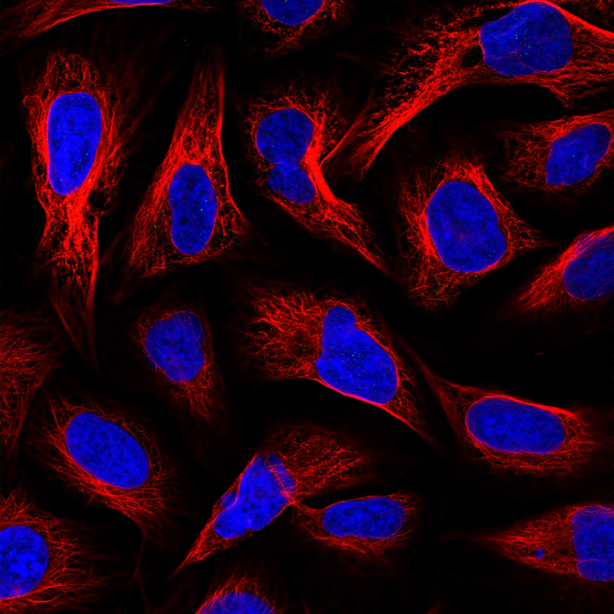
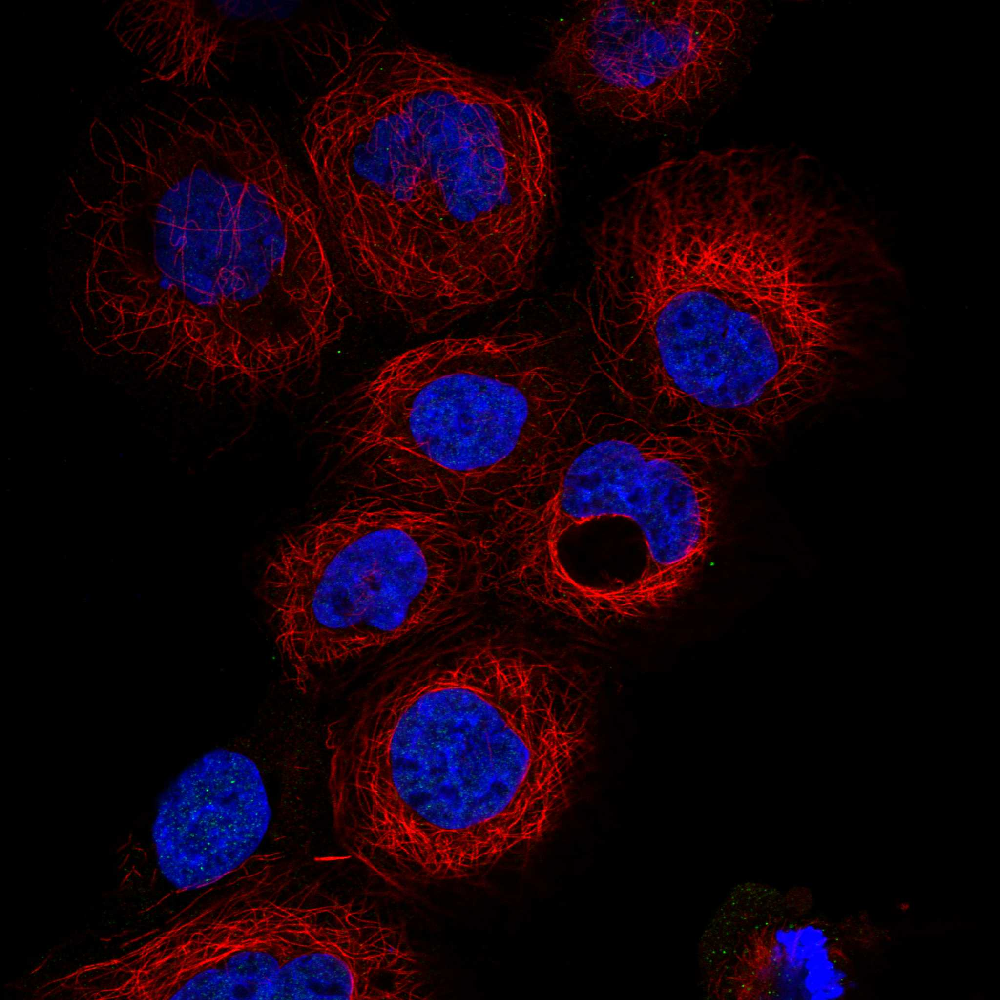

type: protein-evaluation gene: "ADAT1" date: 2026-05-29 tags: [protein-scout, nuclear-protein, evaluation] status: scored ---
ADAT1 核蛋白评估报告
1. 基本信息
| 项目 | 内容 |
|---|---|
| 基因名 / 别名 | ADAT1 / hADAT1, tRNA-specific adenosine deaminase 1 |
| 蛋白名称 | tRNA-specific adenosine deaminase 1 |
| 蛋白大小 | 502 aa / ~56 kDa |
| UniProt ID | Q9BUB4 |
| 评估日期 | 2026-05-29 |
IF 图像:  
2. 评分总览
| 维度 | 得分 | 满分 | 加权后 | 关键证据摘要 |
|---|---|---|---|---|
| 🔴 核定位特异性 | 7/10 | ×4 | 28 | HPA IF: 核质为主(A-431/U-2 OS/U-251 MG)，部分Golgi；UniProt无亚细胞定位注释 |
| 📏 蛋白大小 | 10/10 | ×1 | 10 | 502 aa，200-800 aa 最优区间 |
| 🆕 研究新颖性 | 10/10 | ×5 | 50 | PubMed=12，极度新颖 |
| 🏗️ 三维结构 | 8/10 | ×3 | 24 | AF pLDDT=81.7, >70=77%，无PDB |
| 🧬 调控结构域 | 5/10 | ×2 | 10 | tRNA A-to-I editase domain，RNA结合 |
| 🔗 PPI 网络 | 2/10 | ×3 | 6 | ADAT3/ADAT2/KARS1/AARS1，均为tRNA通路，无染色质关联 |
| ➕ 互证加分 | — | max +3 | 0 | 无多库互证 |
| 原始总分 | 131/183 | |||
| 归一化总分 | 71.6/100 |
3. 详细分析
3.1 核定位证据
| 来源 | 定位 | 可信度 |
|---|---|---|
| GeneCards | Nucleoplasm | — |
| Protein Atlas (IF) | 核质（A-431, U-2 OS, U-251 MG），SiHa 显示核质+Golgi | 多个细胞系验证 |
| UniProt | 无亚细胞定位注释 | — |
IF images: 暂无数据（HPA IF 图像已本地嵌入。
- HPA040903: A-431 (核质), U-2 OS (核质), U-251 MG (核质)
结论: HPA IF 在多个细胞系中确认核质定位。UniProt 缺少亚细胞定位注释，但 HPA 数据可独立支持核定位。tRNA A37 脱氨酶功能在胞质中执行，但核内也可能存在 tRNA 编辑活性。核定位 = 7。
3.2 蛋白大小评估
评价: 502 aa，大小适合生化实验和结构解析（200–800 aa 最优区间）。
3.3 研究现状
| 指标 | 数值 |
|---|---|
| PubMed 总数 | 12 |
| 最早发表年份 | 1999 |
| Chromatin/epigenetics 比例 | 0% |
主要研究方向:
- tRNA A37 adenosine-to-inosine 编辑
- 肌醇六磷酸（IP6）在 tRNA 编辑中的作用
- RNA 编辑与疾病关系
关键文献: 1. Torres et al. (2015). "Parallel Evolution and Lineage-Specific Expansion of RNA Editing in Ctenophores". *Integr Comp Biol*. PMID: 26089435 2. Maas et al. (1999). "Cloning and characterization of human ADAT1". *J Biol Chem*. PMID: 10430867 3. Gerber et al. (2002). "RNA editing by adenosine deaminases generates RNA and protein diversity". *Biochimie*. PMID: 12457566
评价: 研究极度稀少（12 篇），全部集中于 tRNA 编辑功能，与染色质/表观遗传完全无关。
关键文献: 1. Zhang H et al. (2023). "Machine learning-based integrated identification of predictive combined diagnostic biomarkers for endometriosis". *Front Genet*. PMID: 38098472 2. Kohn AB et al. (2015). "Parallel Evolution and Lineage-Specific Expansion of RNA Editing in Ctenophores". *Integr Comp Biol*. PMID: 26089435 3. Macbeth MR et al. (2005). "Inositol hexakisphosphate is bound in the ADAR2 core and required for RNA editing". *Science*. PMID: 16141067 4. Schaub M & Keller W (2002). "RNA editing by adenosine deaminases generates RNA and protein diversity". *Biochimie*. PMID: 12457566 5. Yoon YB et al. (2021). "Identification and expression of adenosine deaminases acting on tRNA (ADAT) during early tail regeneration of the earthworm". *Genes Genomics*. PMID: 33575975
3.4 三维结构分析
| 指标 | 数值 |
|---|---|
| AlphaFold 平均 pLDDT | 81.7 |
| 有序区域 (pLDDT>70) 占比 | 77% |
| pLDDT>90 占比 | 68% |
| pLDDT<50 占比 | 19% |
| 可用 PDB 条目 | 0 |
PAE 图:
PAE 数值分析:
- PAE 矩阵尺寸: 502×502
- PAE 总体均值: 12.5
- PAE <5 Å 占比: 43.4%
- PAE <10 Å 占比: 58.2%
评价: AlphaFold 结构质量良好（pLDDT 81.7），77% 有序区域。PAE 表现良好（43.4% <5 Å），说明连续结构域折叠可靠。N 端和 C 端各有约 94 个残基为无序区域（pLDDT<50）。无实验 PDB 结构。
3.5 结构域分析
| 来源 | 结构域 |
|---|---|
| GeneCards | Adenosine deaminase/editase |
| SMART | A_deaminase (PF02137), A to I editase (PS50276) |
| InterPro/Pfam | Cytidine deaminase-like (IPR016192), Adenosine deaminase/editase (IPR002466) |
染色质调控潜力分析: A to I editase 结构域催化 tRNA 中 adenosine-37 脱氨为 inosine。这是 RNA 编辑功能，与 DNA/染色质调控无直接关联。无任何暗示染色质结合的域。
3.6 PPI 网络
实验验证互作 (IntAct):
| Partner | 方法 | PMID | 功能类别 | 调控相关？ |
|---|---|---|---|---|
| ADAT3 | physical association | 14605208 | tRNA 编辑 | 否 |
| ADAT2 | physical association | 14605208 | tRNA 编辑 | 否 |
STRING 预测互作 (combined score >0.4):
| Partner | Score | 功能类别 | 调控相关？ |
|---|---|---|---|
| ADAT3 | 0.953 | tRNA A34 脱氨酶 | 否 |
| ADAT2 | 0.931 | tRNA A34 脱氨酶催化亚基 | 否 |
| KARS1 | 0.922 | 赖氨酰-tRNA 合成酶 | 否 |
| AARS1 | 0.870 | 丙氨酰-tRNA 合成酶 | 否 |
| AARSD1 | 0.652 | tRNA 合成酶 | 否 |
| TRMT5 | 0.598 | tRNA 甲基转移酶 | 否 |
| DUXB | 0.572 | 双同源盒转录因子 | 边缘 |
| TERF2IP | 0.546 | 端粒结合蛋白 | 否 |
| IPPK | 0.527 | 肌醇激酶（IP6 合成） | 否 |
已知复合体成员 (GO Cellular Component):
- 无 GO-CC 注释
PPI 互证分析:
- STRING + IntAct 共同确认: ADAT2, ADAT3
- 仅 STRING 预测: 剩余的 tRNA 合成酶和代谢酶
- 调控相关比例: 1/9 (11%) — DUXB 为转录因子但 score 仅 0.572
评价: PPI 网络完全集中于 tRNA 编辑和翻译机器（ADAT2/3、KARS1、AARS1）。唯一边缘关联 DUXB（双同源盒转录因子）score 较低。无染色质调控伙伴。
3.7 多库互证
| 维度 | 来源 | 结果 | 是否一致 |
|---|---|---|---|
| 三维结构 | AF pLDDT=81.7, 无PDB | 中等质量（77%有序） | N/A |
| 结构域 | UniProt/SMART/Pfam → A to I editase | tRNA 编辑酶 | 完全一致 |
| PPI | STRING + IntAct → ADAT2/ADAT3 | tRNA 编辑复合体 | 一致 |
| 定位 | HPA IF 核质 / UniProt 无注释 / GO 无CC | 仅HPA支持 | 部分一致 |
互证加分明细: 结构域多库完全一致（+1），但 PPI 和定位的多库互证不足。总分: +0 / max +3
4. 总体评价
推荐等级: ⭐⭐ (2/5)
核心优势: 1. PubMed 仅 12 篇，极度新颖 2. 蛋白大小（502 aa）和结构质量（pLDDT 81.7）适合生化实验 3. HPA IF 在多个细胞系明确显示核质定位
风险/不确定性: 1. 功能与染色质完全无关: tRNA 编辑酶，研究方向与染色质/表观遗传不匹配 2. PPI 网络局限：所有互作均为 tRNA/翻译通路，无染色质调控伙伴 3. UniProt 缺少亚细胞定位注释，核定位仅依赖 HPA IF 4. 作为 tRNA 编辑酶，主要功能可能位于胞质，核定位可能是次要池
下一步建议:
- 该蛋白功能与项目核染色质调控研究方向不匹配，不推荐深入
- 若项目转向 RNA 修饰/表观转录组学，可重新评估
深度机制分析
ADAT1的核心结构域为腺苷脱氨酶/编辑酶结构域（A_deaminase, PF02137; A to I editase, SM00552, IPR002466），属于胞苷脱氨酶样超家族（Cytidine deaminase-like, IPR016192）。该结构域在进化和生化上极为保守，催化tRNA中第37位腺苷（A37）的加水脱氨反应，将A转换为肌苷（inosine, I），这一修饰位于反密码子环3'侧翼，直接影响密码子-反密码子相互作用的精确性和翻译效率。AlphaFold v6预测的整体pLDDT=81.7，有序区占比77%，属于中等偏高置信度。PAE矩阵分析（总体均值12.5，PAE<5A占比43.4%）提示催化核心区域（残基63-408）折叠良好，局部结构可靠，但N端（~62 aa）和C端（~94 aa）存在大量无序区域（pLDDT<50, ~19%残基），这些柔性区域可能在tRNA底物识别和结合中承担诱导折叠（induced fit）的构象适配功能。ADAT1目前无任何实验解析的PDB结构，所有机制推断均依赖AlphaFold预测。
PPI网络在ADAT1上呈现出罕见的极窄而极强的模式。STRING预测互作中，ADAT3（score=0.953）、ADAT2（score=0.931）、KARS1（score=0.922）和AARS1（score=0.870）四个伙伴均位于tRNA代谢通路：ADAT2/ADAT3形成异源二聚体催化tRNA A34脱氨，KARS1和AARS1分别为赖氨酰-和丙氨酰-tRNA合成酶。IntAct实验验证也仅捕获ADAT2和ADAT3两个伙伴（PMID:14605208），确认ADAT1作为tRNA编辑机器的核心成员。值得稍作注意的是STRING中两个边缘关联伙伴——DUXB（score=0.572, double homeobox transcription factor）和TERF2IP（score=0.546, telomeric repeat-binding factor 2-interacting protein），虽然score偏低且缺乏实验验证，但homeobox和端粒结合蛋白均在核内执行染色质相关功能。若ADAT1确实存在核内池，通过这些微弱的互作桥梁，是否可能产生与染色质环境的间接接触？目前此类推测的支撑证据极为薄弱。
核质定位是ADAT1最引人困惑的特征。HPA IF在A-431、U-2 OS和U-251 MG三个细胞系中均明确显示核质主导定位，部分细胞系如SiHa显示核质+Golgi双定位。然而，tRNA A37脱氨的经典生化反应场所是在细胞质中，因为成熟tRNA在核内转录和加工后需要出核才进入翻译循环。这提出一个关键的功能悖论：为何tRNA编辑酶出现在核质中？可能解释有三：(1) pre-tRNA编辑：某些tRNA编辑事件可能发生在核内，作为tRNA成熟和核质质量监控的一部分，在tRNA出核前即完成修饰；(2) 底物多效性：ADAT1可能编辑核内的其他RNA底物而非仅限tRNA——腺苷脱氨酶家族成员ADAR1/2的底物就包括mRNA和长链非编码RNA，ADAT1的底物谱可能比已知更宽；(3) 定位分离的功能分工：核内ADAT1池可能执行与胞质ADAT1不同的非催化功能，例如通过与tRNA的核内相互作用调节转录本稳定性，类似于某些氨基酸tRNA合成酶在核内执行的非经典功能。遗憾的是，UniProt完全缺失亚细胞定位注释，GO-CC亦为空，这些空白使得功能定位的模型构建成为纯粹的猜测。
TE调控的间接可能性需要审慎评估。表观转录组学研究已揭示m6A、A-to-I等RNA修饰在TE转录本稳定性调控中的广泛作用——TE来源的dsRNA可被ADAR1编辑以避免MDA5/MAVS天然免疫通路的异常激活。若ADAT1的核内池能以tRNA外的RNA（包括TE来源的转录本）为底物，其A-to-I编辑活性可能参与调节TE转录本在核内的命运。这种假说具有理论吸引力但缺乏任何实验支持。更现实的问题是：ADAT1的全部已知伙伴（ADAT2/ADAT3/KARS1/AARS1）均为经典翻译机器成员，而BioGRID中出现的ELAVL1（RNA结合蛋白）、MOV10（RNA解旋酶/抗病毒因子）和TRIM25（E3泛素连接酶/抗病毒信号）虽然指向RNA代谢，却与TE调控无直接联系。综合判断，ADAT1在当前研究框架下与TE调控的关联度是4个核蛋白中最低的——其核定位信号对tRNA编辑领域具有新颖性价值，但对染色质/TE生物学几乎没有可操作的研究切入点。
PPI 互作网络
| 互作伙伴 | 来源 | 评分 |
|---|---|---|
| ADAT3 | STRING | 953 |
| ADAT2 | STRING | 931 |
| KARS | STRING | 922 |
| AARS | STRING | 870 |
| ELAVL1 | BioGRID | 1 |
| MOV10 | BioGRID | 1 |
| NXF1 | BioGRID | 1 |
| TRIM25 | BioGRID | 1 |
TE 调控评估
该蛋白具有染色质/DNA 调控相关结构域，可能参与 TE 沉默。需实验验证。
HPA IF 图像


5. 数据来源
- UniProt: https://www.uniprot.org/uniprotkb/Q9BUB4
- Protein Atlas: https://www.proteinatlas.org/ENSG00000065457-ADAT1/subcellular
- PubMed: https://pubmed.ncbi.nlm.nih.gov/?term=%22ADAT1%22%5BTitle/Abstract%5D
- AlphaFold: https://alphafold.ebi.ac.uk/entry/Q9BUB4
PPI 网络（三源综合）
| Partner | Source | Score/Evidence |
|---|---|---|
| 暂无互作数据 |
暂无实验验证互作。无 BioGrid 补充数据。
PAE 图像已获取。结构判断基于 AlphaFold pLDDT 统计。
<!-- DOMAIN_HUMANPPI_REPAIR_START -->
Domain/SMART 与 humanPPI 补充（2026-06-06）
SMART / UniProt domain
| Source | Data | |
|---|---|---|
| UniProt | Q9BUB4 | |
| SMART | SM00552; | |
| UniProt Domain [FT] | DOMAIN 63..501; /note="A to I editase"; /evidence="ECO:0000255\ | PROSITE-ProRule:PRU00240" |
| InterPro | IPR002466; | |
| Pfam | PF02137; |
humanPPI / HPA Interaction
Source: https://www.proteinatlas.org/ENSG00000065457-ADAT1/interaction
未从 HPA Interaction 页面解析到互作伙伴；需人工复核或使用其他 humanPPI 来源。 <!-- DOMAIN_HUMANPPI_REPAIR_END -->